Best practices, tips and tricks for EV3 programming techniques along with their visualization in the EV3TreeVis project.
The LEGO Mindstorms EV3 program offers a graphical interface and language EV3G to create stunning programs for your EV3 brick, motors and sensors. During my experience helping and coaching teams for First Lego League for several years I have seen great coding patterns.
As FLL is about learning and sharing I would like to share these patterns with you along with the example ev3 file.
The official Mindstorms program offers a graphical language for creating stunning programs. In the EV3G language it is easy to drag new blocks and connect the pieces like a puzzle.
In EV3TreeVis each Mindstorms block is visualized as an individual block with all its input and output attributes. Blocks follow one another based on the execution sequence.
Block colors and icons properties follow the properties displayed within the EV3 Mindstorms editor.
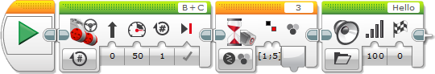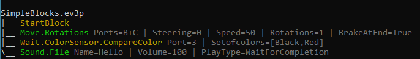
Data Wires are very effective technique for "remembering" something at a block and during execution use the same information - even at a later stage. Think of it as a very effective container that can even be a time capsule. Any output parameters can start a data wire and any input parameters can receive value from a data wire. A data wire can be connected to more than one targets.
Data wires have types according to the data transported. A data wire can even remember if you stored text, number, bool(yes-or-no) or several numbers or bools inside. This is called data wire type.
Data wires between blocks are tracked and handled.
Data wire naming include data wire type: number dNw, bool dBw, string dSw, bool array dABw and number array dANw.
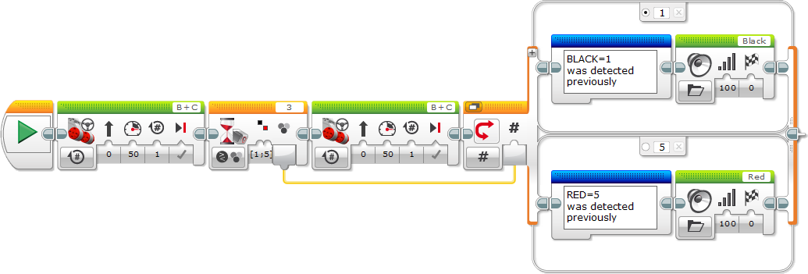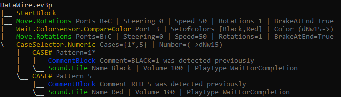
More info on data wires available at LEGO help, EV3Lessons - Data wires.
In the EV3 editor data wires can pass through Loop and Tabbed Switch block boundaries. This is extremely useful for more complex programs like the one below - move forward and if red was detected move back with the same distance arriving to the starting position.
For consistency reasons such data wires are detected and merged for display showing the same data wire Id.
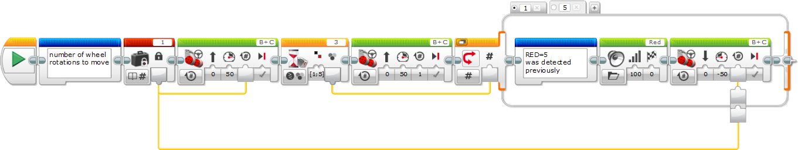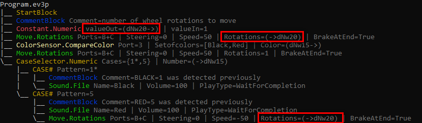
You dont like repeating yourself, right? You dont like repeating yourself, right? You dont like repeating yourself, right? Why not code it only once and enjoy the rest of the fun?
Just imagine how convenient would it be to correct the mistake only once? :-D
Loop blocks repeat the instructions inside the block until the condition selected happens - from simply repeating everything 3 times to repeating everything until a color sensor detects red color.
Loop blocks and all internal sub-blocks are processed.
Loop Block output index is added when used with a data wire.
Loop Block internal blocks are shown as child elements for the loop blocks.
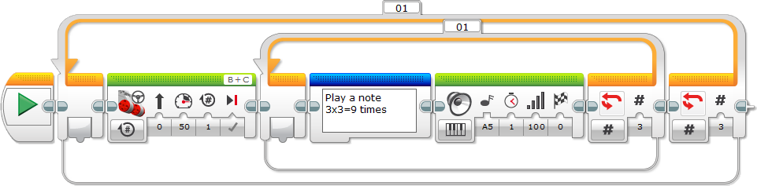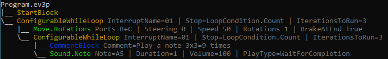
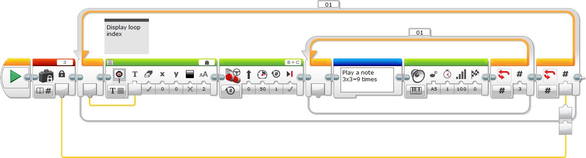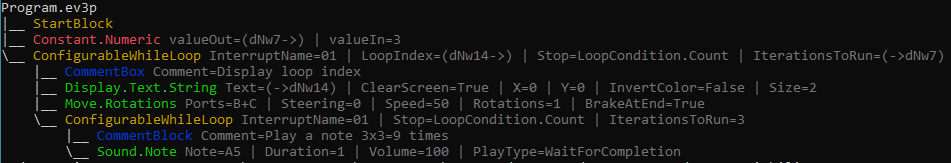
More info on data wires available at EV3Lessons - Loops.
Often you would like adapt your program to your environment and execute the most appropriate action related to the environment conditions. Switch block decides what to do and will execute only one of the branches depending on the input value - either by choosing a number, color or deciding whether touch sensor was pressed or not. This is called a "Case".
Black circle indicates default case - this is executed when something not specified by the cases happens.
Cases can be removed by the (x) button and can be added by the (+) button.
Switches can be shown either as Flat or Tabbed view by the button on the block top left corner. For now tabbed view provides nearly* the same functionality as flat view in a more condensed format. In tabbed view data wires can pass through Switch block boundaries both as inbound or outbound data.
Tabbed Switch blocks can receive incoming data wires and can have outgoing data wires. This is called data tunnel. Each Case can individually connect to the data wire using a very effective programming technique.
Switch blocks and all internal sub-blocks are processed in EV3TreeVis.
Switch Block Case internal blocks are shown as child elements for the switch block.
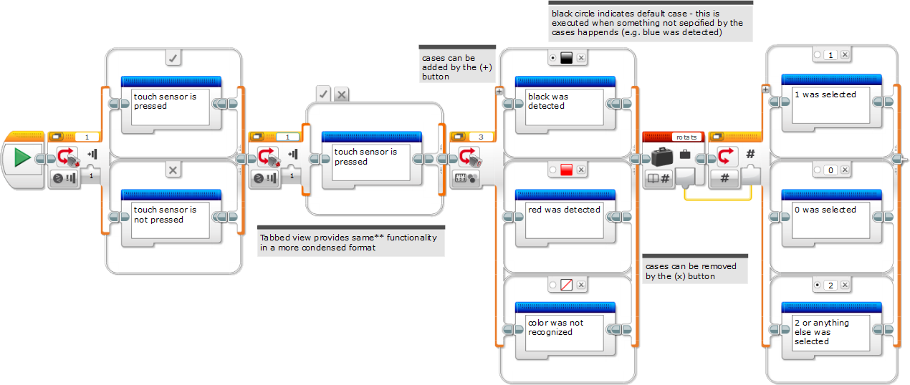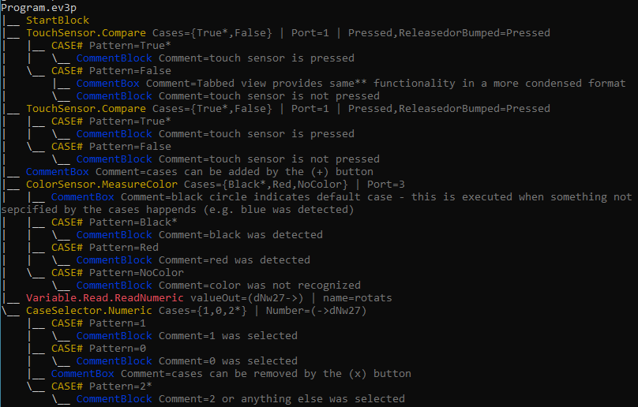
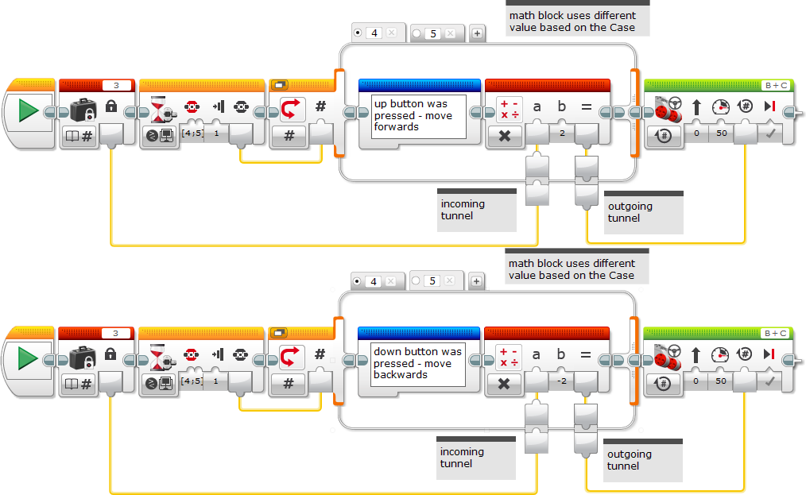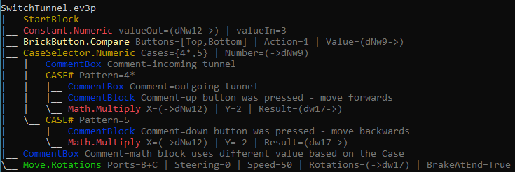
More info on data wires available at EV3Lessons - Switches.
Loop blocks repeat the instructions inside the block until the selected condition happens - e.g. from simply repeating everything 3 times to repeating everything until a color sensor detects red color.
Switch block decides what to do and will execute only one of the cases depending on the input value - either by choosing a number, color or deciding whether touch sensor was pressed or not. This is called a "Case".
The Stop or Switch Condition can be set by setting the "main mode" parameter of the blocks. Several options are available based on the available sensors.
Hint: With some sensors Measure sub-mode is available to the Compare sub-mode which is always available for Switch blocks. Compare provides yes-or-no (bool) results while measure provides a finite number of choices - such as color detected or button pressed.
Switch Block Case and Loop Block Stop condition with all parameters are added.
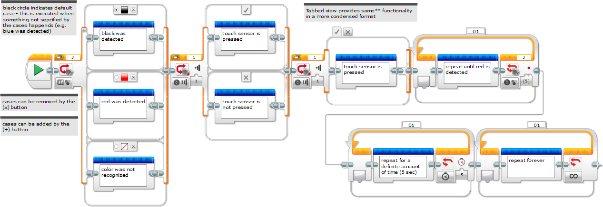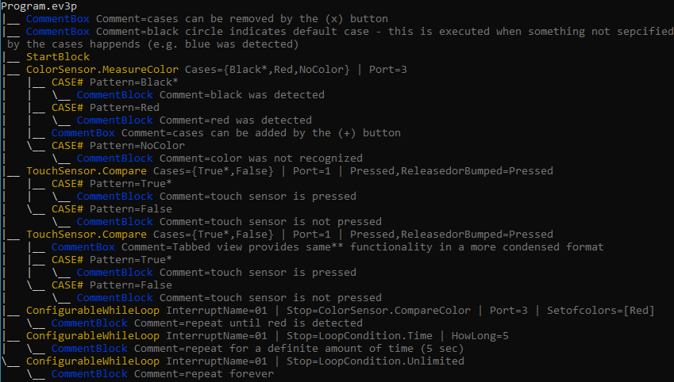
An EV3 project typically contains several small indpendent programs. Often these programs do not tie together, rather are started individually from the brick's menu. In more complex projects a better overview is preferred. The project page offered by the standard EV3 software under the wrench icon is somewhat limited.
Furthermore the EV3 software, as of today hides some errors that can cause program break during the run.
The EV3TreeVis offers a complete overview of the EV3 Project with all Programs and MyBlocks visualized. The overview is clickable and dependency graph is clearly shown. MyBlock usage and calls are clickable on the graphic and textual modes as well.
When moving variables between projects, global variables are not copied. This does not yield to any runtime errors, yet can cause problems. EV3TreeVis detects and shows this as a warning.
Deleted MyBlocks yield to runtime errors. EV3TreeVis detects and shows this as a warning.
Missing Sound and Image files are detected and shown as warnings.
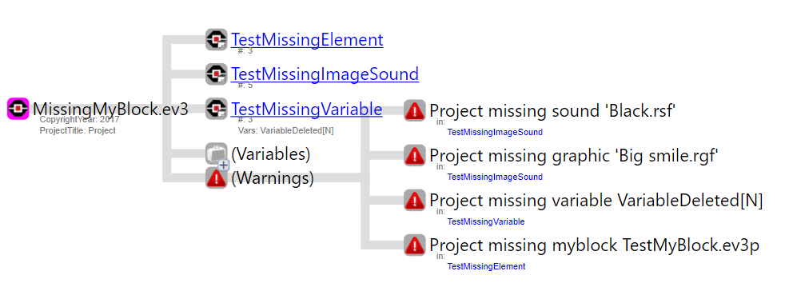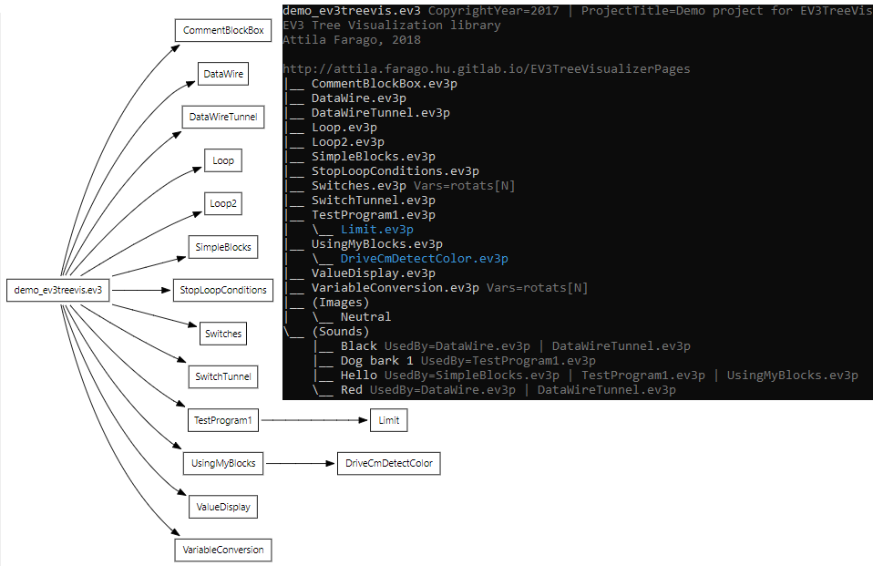
The EV3 editor supports a variety of mall visual utilities to help you select the right value for a parameter. This way there is no need to remember what color 1 or change type 1 mean, you can select the right value from a drop down list.
Values are converted to a meaningful text for easier understanding.
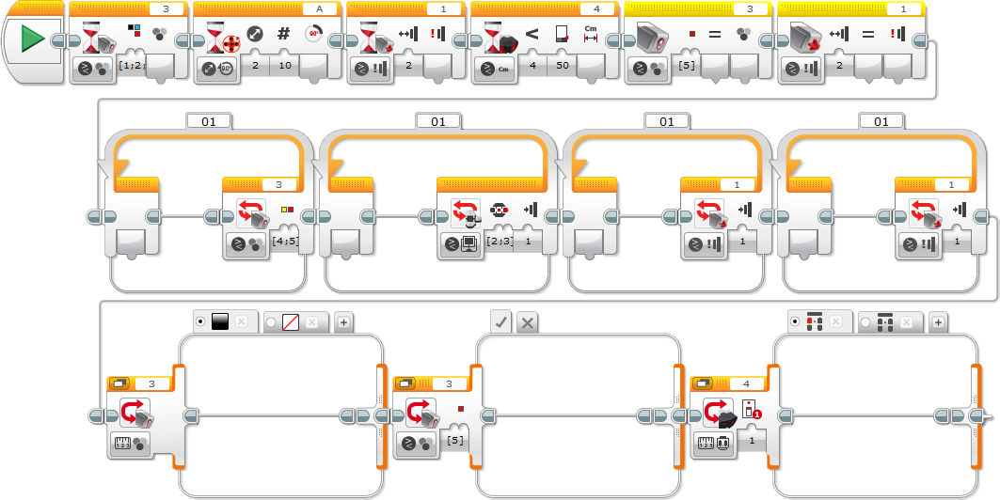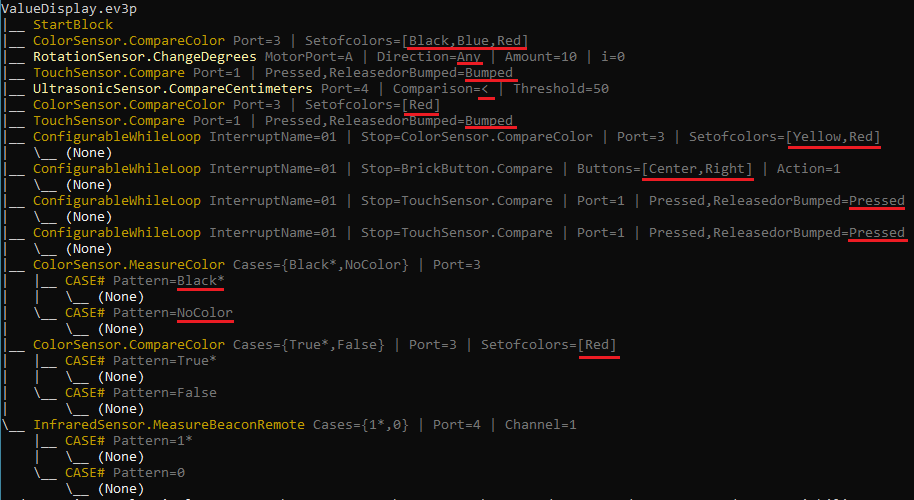
Blocks are executed one after the other. This is called block sequence and the connector is often referred as sequence plug. Many projects start simple and can achieve great results just adding several blocks.
One key factor for success during FLL is how team can handle the time limit, constrainting the robot ability to act in a simple way. When you live and move in your everyday life you also move your legs, arms and several muscles all at once. EV3 software can also help you do two or more things in parallel. For example you might start moving 4 motors in parallel, while waiting for a touch sensor and a color sensor.
EV3TreeVis display parallel sequence blocks in the generated tree, ordering the simpler branch to the front.
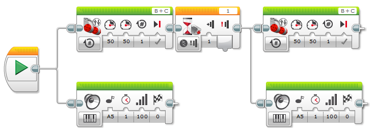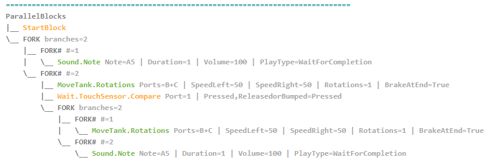
Writing several blocks of code you would like to use frequently can be boring and also quite disappointing.
When creating software developers often group these blocks together and add a label to them so that it needs to be created only once. Also when you need to change anything later on you need to change it only once.
In the EV3-G we call such blocks of code grouped together MyBlocks. These blocks can also receive inputs of any data kind and can also return values computed or collected. Use this technique if you have created something that seems multi-purpose and you would like to use it multiple times.
EV3TreeVis reads all programs and myblocks from the project. Each MyBlocks is colored with its original color. In graphical mode the appropriate icon is used. MyBlocks input and output parameters are named data wires that are also visualized for easier comprehension e.g. dN12w[cm] and dNw15[coloratend].
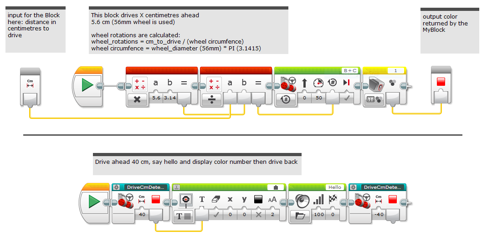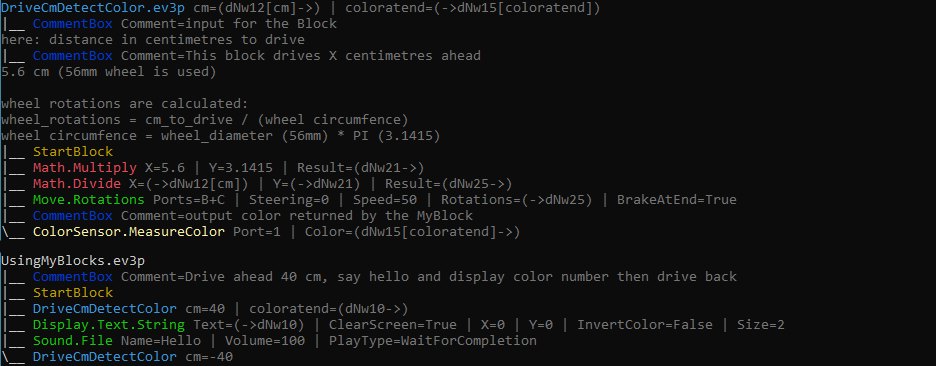
You can adjust the data flow in your programs in several ways. For a start you will use conditional blocks with repeated statements. Later on you will store data in variables based on conditions and will connect this data to the blocks used.
In cases where you would like adjust the data flow based on conditional statements. An advanced technique for avoiding unnecessary variables is using wire tunnels in switch statements without any blocks shortcutting the incoming and outgoing tunnels. With this based on a condition you can determine whichever input data tunnel is connected to whichever output data tunnel. Let's call this a Connector.
Use this technique with caution for simpler code and shorter programs. Make sure you have full understanding of Data Wires and Data Wire Tunnels.
Data wires are visualized and are connected withing global scope traversing through the tunnels.
As depending on the conditions data wires are connected in different ways a new pseudo block is added to the visualization with "Connector" name.
Example taken from GyroBoy_Balanc3r robotsquare site from Laurens Valk. This example creates a MyBlock where value is limited between min and max values.
| |
Value is between Min and Max | Value is smaller than Min | Value is greater than Max |
|---|---|---|---|
| min = 10 max = 30 |
value = 20 result = 20 (input) |
input = 8 result = 10 (min) |
input = 46 result = 30 (max) |
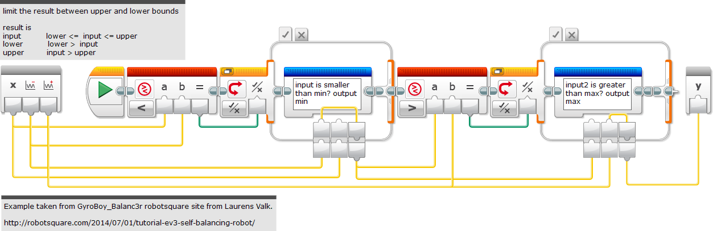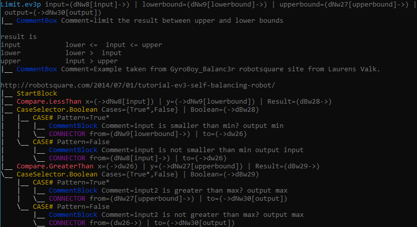
Your EV3 brick can communicate with up to 4 motors and 4 sensors via its ports. Motor ports are named A-B-C-D, while sensor ports and numbered by 1-2-3-4. Most often you have decided which motor to operate for moving the robot or pushing and arm that is connected to a motor.
In FLL robots I have seen as a common practice B-C big EV3 motors connected to left and right wheels, while A and D medium or big motors used for handling arms interacting with mission models. Sensor usage and numbering depends on the needs for your robot (e.g. 1-3 color sensors, 4 gyro sensor).
A smart programmer might consider creating an universal MyBlock which can operate on different motors (e.g. A or D) or having line following myblock working either for color sensor connected to any arbitrary port. Besides the default 'top right' port selection on the blocks, you can select port from an input data wire and create uniform and generalized code, too. This technique is called port wiring or dynamic ports.
Port wiring is displayed the same way as data wires also using the global scope.
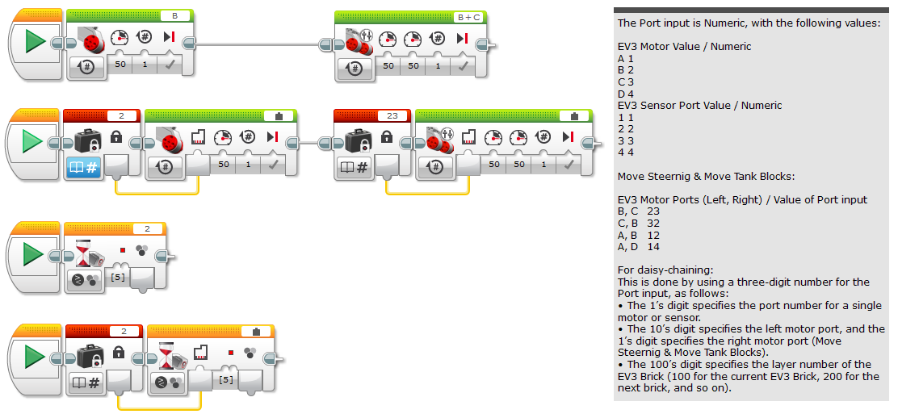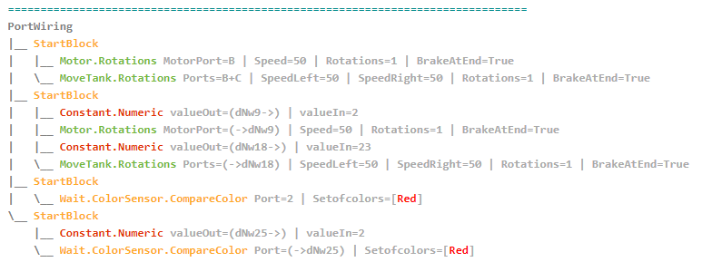
Data inputs connected to data wires can automatically convert single data. Data wires can be converted bool > numeric > text.
For example 99 as a number will be translated as "99" text when needed. Similarly, False is translated to 0 or "0".
Array types do not convert data.
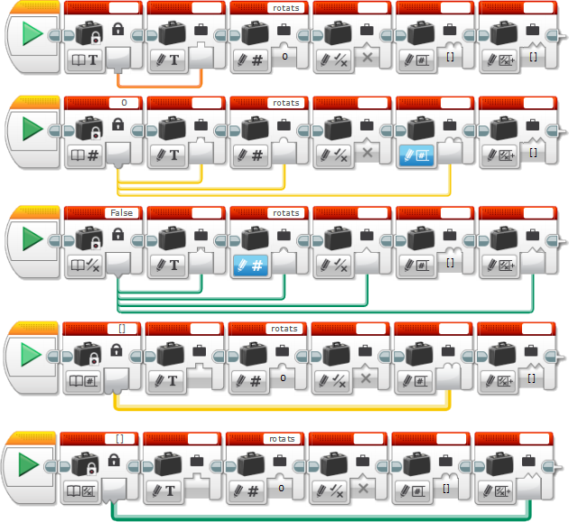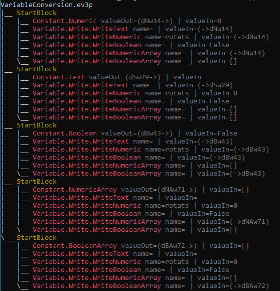
The program and the brick that you are using for programming your robot is much more complex than the ones used in the first space satellites or rockets.
Software code tend to grow more and more complex as time passes by. Though EV3 is a serious play environment, you are still developing a piece of software that will autonomously run on a machine capable of nearly anything.
In big companies, like Google, Microsoft or Facebook professionals not only develop the code we use on a daily basis, but also make sure that the code works. I mean WORKS and if there are changes or fixes they are applied smoothly. This requires a clean and simple environment. A simple and tidy room.
Defining simplicity where new code can be added, existing one can be modified safely is a tough challenge. Software developers tend to define some numbers that can calculated and tell them if a code is clean and simple enough. These numbers are often called Static Code Metrics.
Complexity is not necessarily bad. If you know what you are doing and your peers or audience can still handle the code with confidence.
Please find a code snippet from a great piece of EV3 code - Mindcub3r from David Gilday http://mindcuber.com.
What characterizes a code you can easily maintain and change? Currently EVTreeVis calculates some metrics to guide your way. (Still in a very early phase.)
| Code Metric |
Description | Recommendation |
|---|---|---|
| Nodes | Number of blocks in a program Too many blocks (nodes) on one program tend to make it hard to edit, understand or change. |
Consider moving some of the code to a meaningful MyBlock. |
| MaxBranches | Maximum branches in Switch blocks While many branches can make a program compact, it will make the number of different possibilities explode and harder and harder to understand and test. |
Re-check whether all cases are used well and consciously. |
| MaxDepth | Maximum depth - loops and switches Too many levels of make it hard to read, slow to edit and easy to introduce errors while editing |
Consider moving some of the code to a meaningful MyBlock. |
| MaxForks | Number of max number of parallel threads While parallel threads attribute a great and effective program, unconscious use will make your program hard to read and extend or modify. |
Re-check whether all parallel thread forks are used well and consciously. |
| NodeTypes | Number of different types of blocks Use the right block for the right purpose. If your program have too many types of blocks it could mean that your code is not well structured. |
Consider structuring your code better. Re-thing your myblocks structure. |
Comment blocks and boxes
Your code is often self explanatory and obvious. Sometimes things get more complex and hard to remember.
Actually things are always hard to remember. A good technique is to write the most important information to remember nearby to the code.
EV3 offers blue comment blocks that can be placed inside your code or comment boxes that are free to move.
Little amounts of available space for text
Both CommentBlocks and CommentBoxes are handled in the program. Comment boxes are added before to the nearest valid* block considering loop and switch internal structures.
* Inactive blocks are ignored.
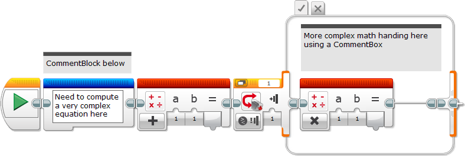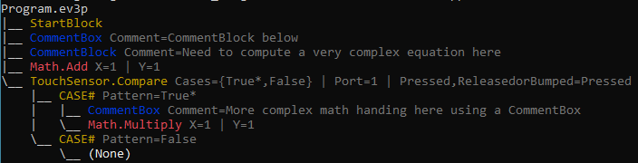